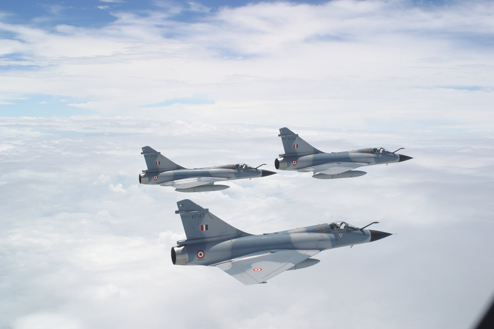

Wikipedia prawi iż:
Samolot myśliwski
– samolot bojowy przeznaczony przede wszystkim do zwalczania innych statków powietrznych i uzyskania przewagi powietrznej, jak i obrony własnych samolotów o innym przeznaczeniu, czym różni się od bombowców, służących do atakowania celów naziemnych, głównie przy użyciu bomb.
Myśliwce z założenia są szybkie i silnie uzbrojone. Większość to maszyny względnie małe (przeważnie jednomiejscowe) i zwrotne…
Fragment filmu Top Gun
USA

United States Air Force (USAF) –
Siły Powietrzne Stanów Zjednoczonych, jeden z rodzajów Sił Zbrojnych Stanów Zjednoczonych, odpowiedzialny za pewną część działań w powietrzu (duża liczba samolotów i śmigłowców bojowych podlega także marynarce wojennej, wojskom lądowym i korpusowi piechoty morskiej). Utworzone zostały jako odrębny rodzaj sił zbrojnych na bazie lotnictwa armii amerykańskiej, 18 września 1947
Wielka Brytania

Royal Air Force (RAF) –
powstał 1 kwietnia 1918 z połączenia Royal Flying Corps (Królewski Korpus Lotniczy) oraz Royal Naval Air Service (Służba Lotnicza Marynarki Królewskiej). Tym samym powstały pierwsze na świecie siły powietrzne niezależne od dowództwa lądowego lub marynarki wojennej. RAF podlegał bezpośrednio Ministerstwu Lotnictwa (Air Ministry). Do końca I wojny światowej RAF miał 4 tys. pilotów oraz 114 tys. personelu naziemnego. Zadania lotnictwa polegały na prowadzeniu zwiadu, bombardowaniu celów naziemnych oraz niszczeniu samolotów przeciwnika.
Rosja
Военно-воздушные cилы Российской Федерации
Военно-воздушные cилы Российской Федерации
(Siły Powietrzne Federacji Rosyjskiej) –
odziedziczyły większość swojego uzbrojenia po rozpadzie ZSRR w 1991 roku, kiedy ówczesny arsenał ponad 10 000 statków powietrznych został rozdzielony między nowe republiki, z czego dwie trzecie sprzętu przypadła Rosji, a reszta w większości Ukrainie oraz Białorusi i Kazachstanowi[3]. Chociaż do dziś większość z ich uzbrojenia wyprodukowano jeszcze za czasów ZSRR to siły powietrzne przeszły znaczną reorganizację, po pierwsze z siłami powietrznymi scalono dotychczas niezależne Wojska Obrony Powietrznej – Wojska ProtiwoWozdusznoj Oborony (PWO), które dysponowały większością myśliwców przechwytujących i kompleksami pocisków SAM.
Polska
Siły Powietrzne –
Historia Sił Powietrznych zaczyna się z końcem I wojny światowej. W 1918 roku funkcjonowało kilka polskich eskadr stworzonych w innych państwach. W Rosji istniała eskadra przy oddziałach generała Józefa Dowbor-Muśnickiego, rozformowana w maju 1918 roku. We Francji pięć eskadr lotniczych powstało przy armii generała Józefa Hallera. Znalazły się w Polsce wraz z wyposażeniem w 1919 roku.
Długi lot od 1918 do 2010r.
Bristol F.2B Fighter
Supermarine Spitfire
Bez komentarza
F-16 + MiG-29
Chiny
中華民國空軍 ROCAF
中華民國空軍 ROCAF
(Siły powietrzne republiki chińskiej) –
formacja lotnicza Armii Republiki Chińskiej, mające za zadanie obronę kraju, czyli de facto przed agresją ze strony Chińskiej Republiki Ludowej. ROCAF wykorzystuje niemal wyłącznie sprzęt produkcji USA lub rodzimy, ale część uzbrojenia sprowadzono też z Francji. Skrzydła i dywizjony zachowały numerację sprzed roku 1949, ponieważ Kuomintang nie uznał legalności władz w Pekinie.
Francja
Armée de l’air
Armée de l’air
(Siły Powietrzne Francji) –
pierwsze siły powietrzne na świecie, których zalążek powstał w 1909 roku, poprzez zakup kilku samolotów dla armii i powstanie pierwszej placówki wojskowej w Vincennes. Od 1912 roku znane jako Aéronautique Militaire. Historia lotnictwa powojennego dzieli się na trzy etapy. Pierwszym była powojenna odbudowa przemysłu, infrastruktury i tworzenia samolotów. Drugi etap rozpoczęty w latach sześćdziesiątych miał za zadanie tworzenia potęgi militarnej, a trzeci od lat dziewięćdziesiątych modernizację. Wprowadzono nowy myśliwiec Rafale, bezzałogowe samoloty, nowe systemy komunikacji. Ulepszono pozostałe konstrukcje i wycofano zużyty i przestarzały sprzęt. Wprowadzono bazową obsługę techniczną samolotów, zamiast dywizjonowej.
